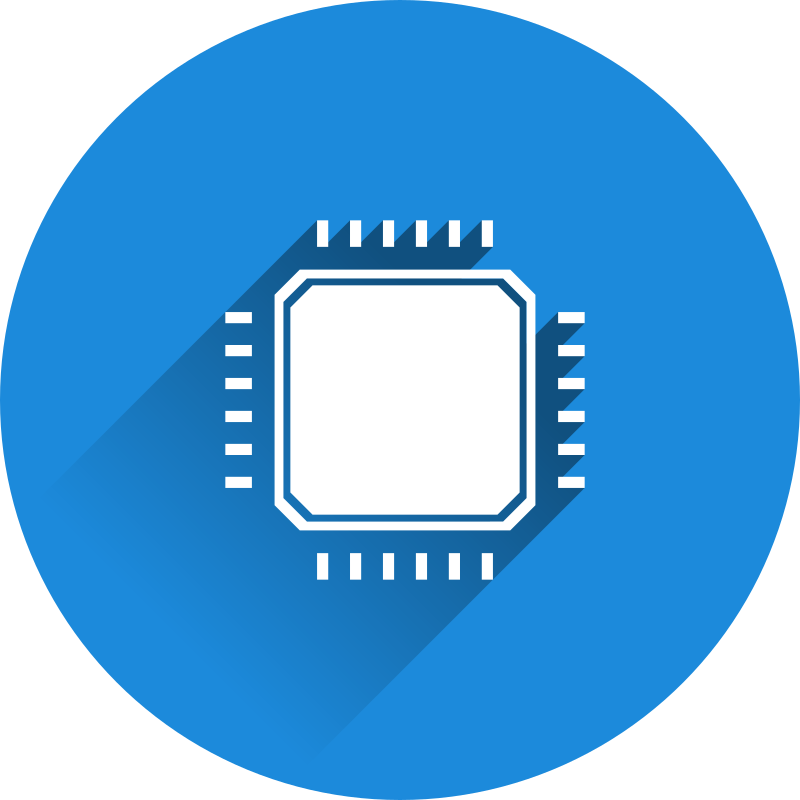

O que é Hardware Proprietário?
Hardware proprietário se refere a dispositivos eletrônicos ou componentes físicos que são desenvolvidos, produzidos e controlados por uma única entidade ou empresa. Nesse contexto, a entidade detém os direitos exclusivos sobre o design, funcionalidades e software integrado do dispositivo, limitando o acesso a informações técnicas e ao código-fonte. O hardware proprietário é caracterizado por sua integração otimizada com o ecossistema da empresa, oferecendo benefícios como maior controle de qualidade, suporte direto, atualizações regulares e experiência do usuário aprimorada. No entanto, essa exclusividade pode resultar em restrições à personalização, interoperabilidade e liberdade do usuário, tornando a escolha entre hardware proprietário e aberto uma consideração essencial ao avaliar as necessidades e objetivos de um projeto ou utilização específica.
Vantagens do Hardware Proprietário
O hardware proprietário refere-se a componentes ou dispositivos que são desenvolvidos, fabricados e controlados por uma única empresa, geralmente mantendo segredos comerciais e propriedade intelectual sobre o design e a tecnologia. Existem algumas vantagens associadas ao uso de hardware proprietário, embora também haja desvantagens e considerações a serem feitas. Algumas vantagens incluem:
Desvantagens do Hardware Proprietário
O hardware proprietário tem suas vantagens, mas também apresenta várias desvantagens. Aqui estão algumas das desvantagens mais comuns do uso de hardware proprietário:
EVOLUÇÃO DO HARDWARE PROPRIETÁRIO
1. Início da Computação Pessoal:
Na era inicial da computação, os sistemas eram projetados e construídos sob medida por empresas como IBM e DEC.
O hardware proprietário era predominante, com componentes customizados e sistemas fechados, o que limitava a interoperabilidade.
Os primeiros mainframes e minicomputadores eram caros e destinados principalmente a ambientes corporativos e institucionais.
Esses sistemas eram altamente controlados pelas empresas fornecedoras, limitando as opções de personalização e expansão.
2. Proliferação de Arquiteturas Abertas:
Com o tempo, a demanda por interoperabilidade e flexibilidade levou ao desenvolvimento de arquiteturas de hardware mais abertas.
A arquitetura IBM PC, introduzida em 1981, abriu caminho para a padronização de componentes e expansão do mercado de computadores pessoais.
Surgiram concorrentes que adotaram arquiteturas compatíveis, permitindo a criação de clones e a competição entre fabricantes de hardware.
Apesar da padronização das arquiteturas, muitos componentes ainda eram proprietários, levando a uma combinação de hardware aberto e fechado.
3. Era dos Dispositivos Especializados:
A medida que a tecnologia avançava, surgiram dispositivos especializados, como consoles de videogame e roteadores, com hardware proprietário otimizado para suas funções específicas.
Empresas buscaram criar ecossistemas fechados, onde hardware, software e serviços se complementassem para oferecer experiências coesas.
Smartphones e tablets também entraram nesse paradigma, com fabricantes projetando hardware e sistemas operacionais integrados.
Esses dispositivos proprietários ofereciam desempenho e funcionalidades específicas, mas às vezes limitavam a personalização e a escolha do usuário.
4. Tendências Atuais em Hardware Proprietário:
Hoje, vemos uma combinação de hardware proprietário e aberto em várias indústrias.
Empresas de tecnologia muitas vezes adotam designs proprietários para otimizar o desempenho e a eficiência dos seus produtos.
Dispositivos vestíveis, como smartwatches e fones de ouvido sem fio, continuam a incorporar hardware proprietário para atender a necessidades específicas.
A interconectividade entre dispositivos é uma tendência, impulsionando a criação de ecossistemas de hardware e software que oferecem uma experiência unificada.